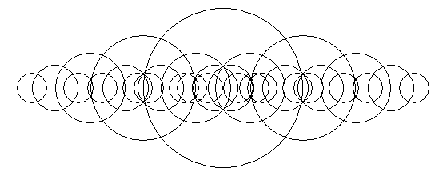
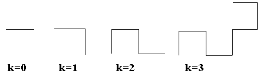
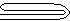
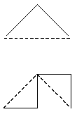

Понятие рекурсии и простейшие рекурсивные алгоритмы. Примеры задач. Рекурсивные алгоритмы и их построение
Простейшая рекурсия (замена цикла)
Факториал. Рекурсивный и итеративный способы вычисления.
Рекурсивный способ:
function fact(n : integer) : longint;
begin
if n <= 1 then
fact := 1
else
fact := n * fact(n - 1);
end;
long fact(int N) {
if(N < 0) // если пользователь ввел отрицательное число
return 0; // возвращаем ноль
if (N == 0) // если пользователь ввел ноль,
return 1; // возвращаем факториал от нуля - не удивляетесь, но это 1 =)
else // Во всех остальных случаях
return N * fact(N - 1); // делаем рекурсию.
}
int factorial(int n) {
return !n ? 1 : n * factorial(n - 1);
}
Рекурсивные функции
Рекурсивная функция (лат. recursio — возвращение) — функция, которая в своей записи содержит вызов себя же.
Рекуррентные отношения
Фракталы и фрактальные множества
Помните детское стихотворение-считалку про 10 негритят? Оно может служить эпиграфом к любой работе на тему "Рекурсия".
«10 негритят пошли купаться в море, 10 негритят резвились на просторе, Один из них пропал – и вот вам результат: 9 негритят пошли купаться в море, 9 негритят резвились на просторе, Один из них пропал – и вот вам результат: … … … … … 1 (из) негритят пошли(ел) купаться в море, 1 (из) негритят резвились(ся) на просторе, Один из них пропал – и вот вам результат: Нет больше негритят!»
Первые три строчки этого стихотворения повторяются 10 раз с небольшим изменением - число негритят уменьшается с каждым разом на единицу. И только, когда число негритят уменьшилось до нуля, стихотворение заканчивается единственной строчкой «Нет больше негритят!». Напишем процедуру, печатающую это стихотворение.
procedure Negr(k: integer); {k - число негритят, параметр процедуры}
begin
if k=0 then {проверка, что число негритят равно нулю}
Writeln('Нет больше негритят!') {выход из рекурсии }
else begin
Writeln(k,' негритят пошли купаться в море,');
Writeln(k,' негритят резвились на просторе,');
Writeln('Один из них пропал - и вот вам результат:');
Negr(k-1); {Вызов процедуры с уменьшенным на 1 параметром}
end
end;
Вызов этой процедуры в основной программе будет выглядеть так: Negr(10).
Интересным является применение рекурсии при создании рисунков.
Пример 1.
Рассмотрим простейший рисунок из окружностей разных радиусов.
Если вглядеться в него внимательно, то можно заметить, что рисунок начинается с центральной окружности самого большого радиуса. Затем осуществляется переход на концы горизонтального диаметра окружности, которые должны играть роль центров двух окружностей меньшего радиуса (примерно в полтора раза). Этот же процесс повторяется и с этими двумя окружностями, и с полученными четырьмя новыми, и так далее до тех пор, пока уменьшающийся радиус окружности не станет меньше первоначального в 1,5*1,5*1,5*1,5 раз (если посчитать, то должно выполниться четыре вложенных вызова рекурсивной процедуры).
Рекурсивная процедура, выполняющая такой рисунок, должна иметь в качестве передаваемых параметров координаты центра окружности и величину радиуса.
Программа, при помощи которой будет нарисован этот рисунок, может быть написана так:
uses Graph;
procedure Ris(x,y,r:integer);
begin
If r>=10 then begin
Circle(x,y,r); { Рисуем окружность }
{ Вызываем 2 раза рекурсивно саму себя }
Ris(x-r,y,r*2 div 3);
Ris(x+r,y,r*2 div 3)
end
end;
var GD,GM : integer;
begin
GD := detect;
GM := 1;
InitGraph(GD,GM,'');
Ris(320,240,100); { Рисуем по центру экрана, самая большая окружность - 100 пикселей }
Readln;
CloseGraph;
end.
Реализация на Delphi с сохранением в файл.
unit MainUnit;
interface
uses
Winapi.Windows, Winapi.Messages, System.SysUtils, System.Variants,
System.Classes, Vcl.Graphics, Vcl.Controls, Vcl.Forms, Vcl.Dialogs,
Vcl.ExtCtrls, PngImage;
type
TDrawForm = class(TForm)
Image: TImage;
procedure FormCreate(Sender: TObject);
private
procedure SaveToPNG(FileName: string);
procedure Circle(x, y, r: integer);
procedure Ris(x, y, r: integer);
public
end;
var
DrawForm: TDrawForm;
implementation
{$R *.dfm}
procedure TDrawForm.FormCreate(Sender: TObject);
begin
{ Не закрашивать фигуру }
Image.Canvas.Brush.Style := bsClear;
{ Подстройка ширины и высоты картинки }
Image.Width := 559;
Image.Height := 220;
Image.Picture.Bitmap.Width := Image.Width;
Image.Picture.Bitmap.Height := Image.Height;
{ Вызов рекурсивной процедуры }
Ris(Image.Width div 2, Image.Height div 2, 100);
{ Сохранение в формате .png }
SaveToPNG('ris.png');
end;
{ Сохранение в формате .png: FileName - имя файла }
procedure TDrawForm.SaveToPNG(FileName: string);
var
png: TPngImage;
begin
png := TPngImage.Create;
png.Assign(Image.Picture.Bitmap);
png.SaveToFile(FileName);
png.Free;
end;
{ Окружность с центром: x, y - центр окружности, r - радиус }
procedure TDrawForm.Circle(x, y, r: integer);
begin
Image.Canvas.Ellipse(x - r, y - r, x + r, y + r);
end;
{ Рекурсивная процедура }
procedure TDrawForm.Ris(x, y, r: integer);
begin
if r >= 15 then
begin
Circle(x, y, r);
Ris(x - r, y, r * 2 div 3);
Ris(x + r, y, r * 2 div 3)
end;
end;
end.
Пример 2.
На входном потоке находится слово (последовательность литер), заканчивающаяся пробелом. Написать программу, которая позволит напечатать это слово "задом наперед", т.е. выписывая буквы слова с конца.
В этом примере мы опишем процедуру, у которой не будет параметров, т.к. при каждом ее вызове будет вводиться одна литера, которая будет сравниваться с пробелом. Сама же программа будет состоять только из вызова этой процедуры.
Procedure REV;
var c:char;
begin
read(c);
if c<>' ' then begin
REV; write(c)
end
end;
BEGIN
REV
END.
Фракталы
Фракталами называются множества, части которых являются повторением образов самих множеств. Изображения фракталов вызывают обычно у всех большой интерес.
Рассмотрим процесс сгибания бумажной полоски: если взять полоску бумаги, согнуть ее пополам К раз и развернуть полоску так, чтобы углы на сгибах стали равны 90°, то, посмотрев на торец полоски, можно увидеть ломаную, которая называется "драконовой ломаной К-го порядка", где K-количество сгибов. Схема этого процесса изображена ниже.


Опишем способ создания «драконовой» ломаной.
На ломаной нулевого порядка, как на гипотенузе, строим прямой угол, на полученных сторонах прямого угла строим тоже прямые углы, но один развернут в правую сторону, а другой - в левую. Данный процесс повторяется К раз.
Напишем соответствующую программу, которая по заданному числу К рисует драконову ломаную К-го порядка.
Program DRACON;
Uses Graph;
Var Gd,Gm,k:Integer;
Procedure st (x1, y1, x2, y2, k:Integer);
Var xn,yn:Integer;
Begin
If k > 0
then begin
xn:=(x1+x2)div 2 + (y2-y1)div 2;
yn:=(y1+y2)div 2 - (x2-x1)div2;
st(x1,y1,xn,yn,k-1);
st(x2,y2,xn,yn,k-1);
end
else Line(x1,y1,x2,y2);
End;
Begin
Gd:=Detect; Gm:=1;
InitGraph(Gd,Gm,'D:\BP\BGI');
WriteLn ('Введите номер уровня ');
Readln( k);
st(200, 300, 500, 300, k);
Readln;
CloseGraph;
End.
Если с помощью этой программы построить ломаную дракона 14-го порядка, то мы получим образ множества, называемого фракталом Хартера-Хейтуэя, рисунок которого приведен ниже.
Литература
Павлова М.В., Паньгина Н.Н. Примеры и задачи на тему «Рекурсия». – «Компьютерные инструменты в образовании», 2001